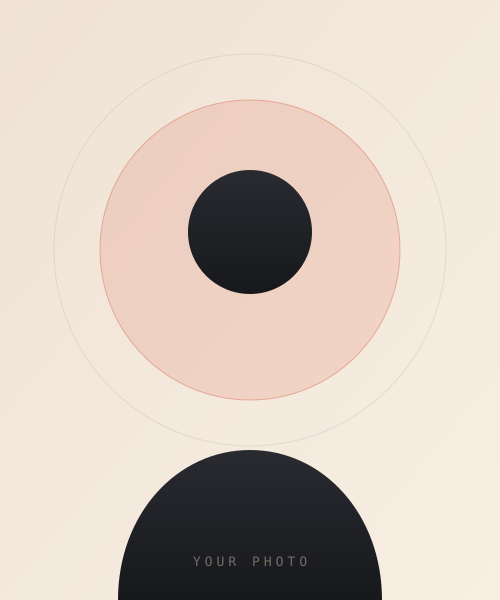

01
2025
Nowa — 极简待办
一个只有「今天」的待办工具。没有项目、没有标签、没有优先级， 打开就知道现在该做什么。支持键盘全操作与离线使用。
- TypeScript
- React
- IndexedDB
现居杭州 · 前端工程师 · 开放交流
我把复杂的想法做成简单好用的界面。写前端，也顺手做几个开源小工具—— 喜欢干净的排版、克制的动效，和能被别人真的用起来的东西。

HELLO, WORLD我是你的名字，一名前端工程师。日常在浏览器里工作： 把设计稿变成能被点、被滑动、被理解的界面，顺带盯着首屏那一两百毫秒的差距。
我相信好产品是「减法」做出来的。所以我会花很多时间删掉不需要的按钮、 统一一套间距、把动画调到刚好不抢戏。工作之外，我用开源工具解决自己的小麻烦， 也把它们放出来给别人用。
— 很高兴认识你 👋
一个只有「今天」的待办工具。没有项目、没有标签、没有优先级， 打开就知道现在该做什么。支持键盘全操作与离线使用。
为后台系统做的一套轻量可视化组件，内置 12 种图表与统一主题变量， 体积只有同类库的三分之一。已在三个内部系统里跑了两年。
排版优先的阅读器：自动提取正文、去掉广告、保留脚注。 给「想认真读完一篇长文」的人用，而不是给收藏夹用。
负责内容产品的 Web 体验与性能治理，主导组件库从 0 到 1，首屏时间下降 42%。
做电商后台与数据看板，搭起团队的第一套可视化规范。
从零写完第一个正式上线的产品，学会了怎么和产品经理吵架又和好。
不管是合作、招人，还是想问「这个效果怎么做」， 都欢迎直接发邮件给我。我通常两天内回复。